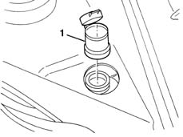

5050A14 reservoir plug (in engine bay) or windscreen washer fluid level sensor - check and top up if necessary
- Path
- Procedures > 50 AUXILIARY UNITS > 5050 SCREEN WASHERS AND HEADLAMP WASH/WIPE > 5050A windscreen and headlamp washer reservoir > 5050A14 reservoir plug (in engine bay) or windscreen washer fluid level sensor - check and top up if necessary
- Kind
- repair procedure (removal / refitting; the operation number is the code)
- Applies to
- all engines; all production periods
- Interactive page
- https://sloeber94.github.io/elrnDB-lYpsln/en/#/2429344
Applies to: all engines; all production periods
 Removing
Removing
 Refitting
RefittingOpen the bonnet lid.
1. Release plug (1a) from reservoir (1b) (bayonet mount).

Applies to: all engines; all production periods
Refitting
RemovingCheck that the plug is not damaged.
Fit the plug in the housing.
Refill the reservoir, if necessary.